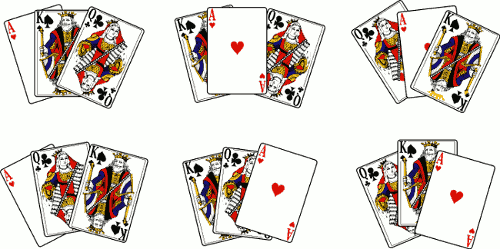
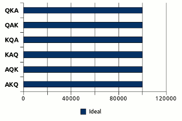
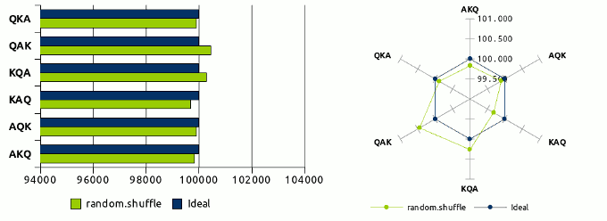
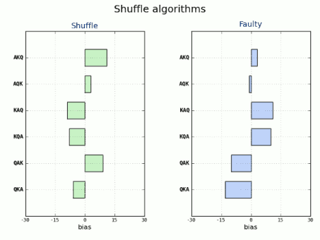
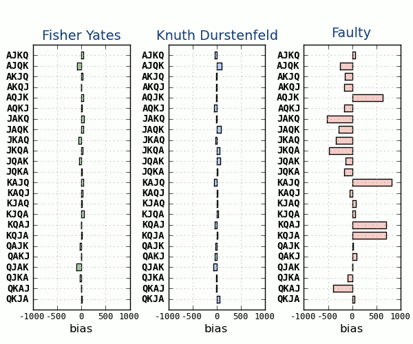

Los algoritmos shuffle se emplean para barajar o desordenar los elementos de una lista (como si fueran las cartas de una baraja) al azar. Se intenta reproducir lo que ocurre en la realidad cuando barajamos un mazo de cartas o extraemos bolas de un bombo para formar una combinación. El comportamiento ideal de estos algoritmos debe de ser imparcial, es decir que todas las posibles permutaciones de esta lista tengan las mismas oportunidades de aparecer como resultado. Este reparto uniforme es clave para el buen funcionamiento del mismo, pues de no ser así se crearían tendencias y el resultado seria predecible, lo que acabaría con la aleatoriedad que se pretende conseguir.
Imaginemos tres distintas cartas de una baraja inglesa: As, Rey y Reina (Ace, King & Queen) como una lista en Python, y ahora veamos todas las posibles permutaciones de la misma (n!, es decir, 3! = 6):

Representación gráfica de las distintas permutaciones.1
>>> lista = ['A', 'K', 'Q'] >>> import itertools >>> for i in itertools.permutations(lista): ... print(i) ... ('A', 'K', 'Q') ('A', 'Q', 'K') ('K', 'A', 'Q') ('K', 'Q', 'A') ('Q', 'A', 'K') ('Q', 'K', 'A') >>>
Vemos entonces que existen 6 permutaciones posibles que pueden darse como
resultado de barajar las cartas. Ahora imaginemos que escogemos una estas
permutaciones, y jugamos a barajar las cartas una y otra vez partiendo siempre
desde esta permutación. Como ya adelantábamos, si el algoritmo shuffle fuese
perfecto, el resultado de estas operaciones debería repartirse de forma
imparcial (equiprobable) entre las distintas permutaciones posibles. Es decir,
que al ejecutar un fragmento de código como el que sigue, donde empleamos el
algoritmo shuffle que por defecto trae Python (en el modulo random de la
librería estándar), ramdom.suffle()
>>> from random import shuffle >>> for i in range(12): ... lista = ['A', 'K', 'Q'] ... shuffle(lista) ... print(lista) ... ['A', 'K', 'Q'] ['K', 'Q', 'A'] ['A', 'K', 'Q'] ['Q', 'A', 'K'] ['K', 'Q', 'A'] ['Q', 'K', 'A'] ['A', 'K', 'Q'] ['Q', 'K', 'A'] ['K', 'Q', 'A'] ['K', 'A', 'Q'] ['Q', 'K', 'A'] ['Q', 'A', 'K'] >>>
los resultados en pantalla deberían irse repartiendo a partes iguales entre las distintas permutaciones. Del mismo modo, si ejecutáramos este algoritmo 600.000 veces sobre la misma permutación, los resultados deberían repartirse de esta forma:

Donde las apariciones de cada permutación posible son idénticas, es decir,
600.000/6 = 100.000. Pero veremos que en la realidad ocurre algo distinto,
como ya podíamos adivinar al ver los resultados del código anterior. Veamos con
detalle que es lo que ocurre con el algoritmo shuffle para ese mismo número
de ejecuciones.

Como podemos ver, el comportamiento real de un algoritmo shuffle no se ajusta al comportamiento ideal. Unas combinaciones están sobre-representadas como QAK y KQA y el resto sub-representadas, siendo la combinación AQK la más cercana a los valores ideales. Pero estos valores no debemos verlos como una tendencia, puesto que si volvemos a ejecutar otras 100.000 operaciones de barajado, aunque seguirá sin ser un reparto equitativo, si es imparcial en cuanto que no se repiten las mismas desviaciones por permutación. Es decir, unas veces unas serán unas permutaciones las más sobre-representadas (y viceversa) y otras lo serán otras distintas, no hay una tendencia clara. Las variaciones en este caso oscilan entre 99.678 (-322) y 100.446 (+446) apariciones sobre un valor ideal de 100.000 con una desviación media de ±0.039%, unos valores no ideales pero si muy razonables y más que suficientes para la mayoría de necesidades.
Es importante volver a incidir en que un algoritmo de barajado bien diseñado
siempre ha de ser imparcial, de hecho random.shuffle lo es, si no será erróneo
y nos creara tendencias que pueden pasar inadvertidas a no ser que se comprueben
correctamente (en este caso de forma estadística). Tendencias que pueden suponer
un verdadero problema y echar al traste todos los cálculos y procesos que empleen
este algoritmo como base. El emplear un algoritmo de barajado erróneo le ha
causado más de un disgusto a algún casino online, ya que las
tendencias permiten predecir el resultado de el barajado y usarlo para hacer
trampas en el juego.
Pero si random.suffle es imparcial, ¿por qué no se reparten los resultados de
manera uniforme? El problema es aquí entra en juego un segundo actor, que
independientemente de lo bien diseñado que este nuestro algoritmo shuffle, nos
condicionará que el reparto sea uniforme o no. Este segundo actor es la
aleatoriedad, lo que precisamente intentamos conseguir. Para que nuestro
algoritmo funcione necesitamos que se elijan las cartas al azar para ir
desordenándolas también al azar. Y es aquí donde está el problema, el que
impide que random.shuffle tenga un comportamiento ideal, que los ordenadores y
la aleatoriedad, no son buenos "amigos". No existe algo así como un generador de
números aleatorios perfecto basado en software (si los hay casi perfectos
basados en hardware), debido a que son deterministas al estar basados en formulas
matemáticas. Por lo que empleamos lo que se denomina generadores de números
pseudoaleatorios. Estos generadores pueden ser más o menos "perfectos", pero
al no generar verdadera aleatoriedad, nos impiden que nuestro algoritmo consiga
efectuar un reparto uniforme. Matemáticamente se ha demostrado que algunos
algoritmos, como el que emplea ramdon.shuffle (luego aclararemos cual es)
tienen un funcionamiento ideal, y de hecho podemos acercarnos muchísimo al
modelo ideal cuando empleamos un generador de aleatoriedad por hardware
(que se acerca mucho a la verdadera aleatoriedad). Al final, aunque sean
matemáticamente correctos, tu algoritmo de barajado será tan bueno como lo sea
tu generador de números aleatorios.
Python, en su modulo random, emplea por defecto uno de los mejores generadores
de números pseudoaleatorios existentes actualmente, el Mersenne twister
(hasta la versión 2.4 se empleaba el Wichmann-Hill, que sigue disponible
como clase) y está implementado en C. Los resultados entregados por él son muy
fiables (excepto para su empleo en criptografía), generando números float
con una precisión de 53 bits y con un elevado periodo de 2¹⁹⁹³⁷-1. Otra buena
opción que nos ofrece el modulo random para entornos Unix/Linux es la clase
random.SystemRandom() que nos ofrece la entropía generada por os.random()
que a su vez la toma de la generada en /dev/random. Esta es una fuente
bastante decente de aleatoriedad que en las pruebas me ha ofrecido resultados
similares a el generador por defecto en Python.
Los algoritmos
Utilizar la función random.shuffle() es la forma más cómoda de barajar una
lista en Python, y desde luego la más recomendable. Pero si quisiéramos
desarrollar nuestro propio algoritmo, esta es una de esas ocasiones en las que o
tienes unos solidos conocimientos matemáticos (o estadísticos) o mejor no
intentes reinventar la rueda, recurre a lo conocido y solido, y como mínimo
prueba siempre que los resultados que obtienes son lo que tu esperas. Esto no es
una afirmación gratuita, esta es una de las ocasiones en la que la diferencia es
tan sutil, que es facilísimo equivocarse sin siquiera darse cuenta. Veamos porqué.
La intuición a veces nos engaña, no seas ingenuo!
Aparentemente barajar una lista es de lo más sencillo, después de razonar un poco, podríamos acabar con un código parecido a este:
def faulty(lst): "An example of a intuitive but very bad algorithm." lst_length = len(lst) for i in range(lst_length): j = random.randrange(lst_length) lst[i], lst[j] = lst[j], lst[i]
Que aparentemente debería ser correcto, algo que han pensado muchos
programadores ingenuamente hasta caer en la cuenta "a la fuerza" de que no es
correcto. Es más, si por ejemplo nos limitáramos a ejecutarlo unas 360 veces
para probarlo (las cuales aparentemente no son pocas), veríamos que tiene un
comportamiento muy parecido al que nos da la función random.shuffle:

Como podemos ver las desviaciones del valor ideal son muy similares y con una
desviación media muy parecida, ±2.130% para shuffle y ±2.222% para nuestro
algoritmo, faulty. Y creeríamos erróneamente que nuestro algoritmo funcionaría
correctamente. Pero es que para comprobar que no haya tendencia alguna es
necesario ejecutarlo, muchas, pero muchas veces (por encima de los cientos de
miles), ya que a mayor número de repeticiones, más se manifiestan esas
tendencias. Al mismo tiempo, cuantos más elementos tenga la lista, mayores son
las desviaciones y la tendencia. Además, con este número de ejecuciones aún no
observamos las tendencias reales que se manifestarán luego en lo sucesivo.
Veamos unos ejemplos para 2.400.000 ejecuciones para nuestra lista de tres
cartas y para otra a la que hemos añadido la Sota (Jack).
{kind=link}
En el gráfico de la izquierda ya se muestran claramente las diferencias, mientras
la función shuffle varía entre -741 y +668 (sobre 400.000) con una
desviación media de ±0.017%, nuestra función tiene una desviación media de
±1.869% (~110 veces superior) y varia entre -46.062 y +46.090. Como
podemos ver es una autentica barbaridad. El gráfico de la derecha, nos confirma
que a mayor número de elementos en la lista, mayores aún son las tendencias.
Mientras que shuffle se sigue comportando correctamente con una desviación
media de ±0.009% y varía entre -486 y +427 (sobre 100.000), nuestro
pobre algoritmo se desmanda completamente, variando entre +31.326 y -25.254,
una desviación media de ±0.541% (~61 veces más). Hay que tener en cuenta,
que al ser mayor número de cartas, son 24 permutaciones, lo que nos da unas
4 veces menos repeticiones por permutación, es decir, que para tener el mismo
número tendríamos que hacer 9.600.00 ejecuciones. Y como podemos ver, los
resultados no son cuatro veces mejores, ni mucho menos, además sabemos que la
tendencia se acentúa con el número de ejecuciones. Viendo estos resultados vemos
claramente que determinadas permutaciones tienen muy pocas probabilidades de
salir, cuando otras son altamente predecibles.
¿Entiendes ahora porqué no debes fiarte únicamente de tu instinto?
Vamos a conocer ahora los algoritmos que funcionan, están matemáticamente comprobados y son sobradamente conocidos (aunque a la vista está que no lo suficiente).
Fisher-Yates
Este algoritmo fue desarrollado por Ronald Fisher y Frank Yates en 19382 como un método a realizar con lápiz y papel. Para ello empleaban una tabla de números aleatorios calculada anteriormente para generar la aleatoriedad que necesitaban para el algoritmo. Este algoritmo esta comprobado matemáticamente y funciona correctamente siempre que la fuente de aleatoriedad sea completamente aleatoria. No deja de ser curioso, que un algoritmo que fue creado hace más de 70 años y que sigue actualmente vigente y presente en multitud de aplicaciones, sea al mismo tiempo desconocido por muchos desarrolladores, lo que les lleva a cometer los errores que comentaba anteriormente al implementar los suyos propios. Por eso como programadores deberíamos ser humildes y procurar no inventar siempre lo ya inventado y buscar siempre una solución previa para nuestros propósitos. Y probar, probar y volver a probar nuestro código...
La típica implementación del algoritmo en Python sería así:
def fisher_yates(lst): "Python implementation of the original Fisher-Yates algorithm." if len(lst) > 1: idx = len(lst) - 1 while idx > 0: sel = random.randint(0, idx) lst[idx], lst[sel] = lst[sel], lst[idx] idx -= 1
Knuth-Durstenfeld
Este algoritmo es en realidad una variante del Fisher-Yates y fue publicado originalmente por Richard Durstenfeld en 19643, pero fue popularizado por el genial Donald Knuth en el volumen 2 de su gran obra, The Art of Computer Programming, como el algoritmo P4. De ahí que sea generalmente conocido como Knuth-Durstenfeld o simplemente como Knuth Shuffle. Aunque curiosamente ninguno de los dos conocía anteriormente el trabajo previo de Fisher y Yates. Este algoritmo se ejecuta en tiempo polinómico lineal O(n), por lo que es muy eficiente.
Implementado en Python, sería algo así:
def knuth_durstenfeld(lst): "Python implementation of the Durstenfeld algorithm popularized by Knuth." for idx in reversed(range(1, len(lst))): # pick an element in lst[:idx+1] with which to exchange lst[idx] sel = random.randrange(idx + 1) lst[idx], lst[sel] = lst[sel], lst[idx]
Este algoritmo es el que está detrás de la función random.shuffle que hemos
venido usando desde el principio del articulo. Lógicamente si está empleando el
mejor algoritmo hasta la fecha, es absurdo implementar el nuestro propio cuando
podemos usar esta función estándar de Python. De hecho el código de esta función
es el siguiente:
def shuffle(self, x, random=None, int=int): """x, random=random.random -> shuffle list x in place; return None. Optional arg random is a 0-argument function returning a random float in [0.0, 1.0); by default, the standard random.random. """ if random is None: random = self.random for i in reversed(xrange(1, len(x))): # pick an element in x[:i+1] with which to exchange x[i] j = int(random() * (i+1)) x[i], x[j] = x[j], x[i]
Que como podemos ver, el algoritmo es el Knuth Shuffle.
A tener en cuenta
Conviene tener en cuenta una cosa, todos estos algoritmos modifican la propia
lista in-place, es decir que no crean una nueva, y por lo tanto no devuelven
ningún valor. Por lo tanto, no puedes asignar el resultado de una de estas
operaciones a una variable, porque por defecto devuelven None. Es un error
muy común, de hecho Mark Lutz lo define en su libro "Learning Python"
como uno de los Common Coding Gotchas, es decir, uno de los errores más
comunes en Python. Y dice claramente (pág. 388, cap. 15)
Don’t expect results from functions that change objects in-place
No esperes resultados desde funciones que cambien objetos en el sitio (sin crear
nuevos objetos modificados). Y pone como ejemplos los métodos append, sort
y reverse en listas.
Para verlo aún más claro, nada mejor que verlo con un ejemplo:
>>> from random import shuffle >>> lista = [1,2,3] >>> id(lista) # Obtenemos el id del objeto (todo en Python es un objeto) 3077959916L >>> shuffle(lista) >>> lista # La lista ya aparece barajada [2, 3, 1] >>> id(lista) # Sin embargo vemos que el identificador es el mismo 3077959916L >>> variable = shuffle(lista) # Esto no tiene sentido, porque no se devuelve nada >>> variable >>> print(shuffle(lista)) # Aquí vemos que la función devuelve None None >>> id(lista) 3077959916L >>> lista [1, 3, 2] >>>
En esta gráfica vemos los tres algoritmos comparados, los he ejecutado solamente 48.000 veces, para apreciar mejor las diferencias entre ellos.

Las desviaciones medias son de ±0.068% para Fisher-Yates, ±0.069% para Knuth-Durstenfeld y de ±0.554% para Faulty.
Sattolo-Cycle
Este algoritmo es muy parecido a los anteriores, pero con una significativa diferencia, este algoritmo solo genera ciclos, de ahí su nombre. Es decir, reparte uniformemente los resultados solo entre algunas permutaciones que se van rotando (aunque comparte el mismo problema con los anteriores al depender de una aleatoriedad no perfecta). Para resumir su funcionamiento, lo que hace es que después de ejecutarlo, ningún elemento de la lista repite la posición anterior que tenía en la misma. Ese algoritmo fue publicado por Sandra Sattolo en 1986
El algoritmo en Python:
def sattolo_cycle(lst): "Python implementation of the original Sattolo Cycle algorithm." idx = len(lst) while idx > 1: idx = idx - 1 sel = random.randrange(idx) # 0 <= sel <= idx-1 lst[sel], lst[idx] = lst[idx], lst[sel] return
Podemos ver aquí un ejemplo de su funcionamiento al ejecutarlo sucesivamente sobre la misma lista, sin partir siempre de la misma permutación, para comprobar como ningún elemento conserva su posición anterior.
lista = ['A', 'K', 'Q'] >>> for i in range(12): ... sattolo_cycle(lista) ... print(lista) ... ['K', 'Q', 'A'] ['A', 'K', 'Q'] ['K', 'Q', 'A'] ['A', 'K', 'Q'] ['Q', 'A', 'K'] ['A', 'K', 'Q'] ['K', 'Q', 'A'] ['Q', 'A', 'K'] ['K', 'Q', 'A'] ['Q', 'A', 'K'] ['K', 'Q', 'A'] ['Q', 'A', 'K'] >>>
El código de estos algoritmos y los test de rendimiento se encuentran en el
fichero shuffle.py de mi repositorio Python Recipes que se encuentra en
github
Aunque estos algoritmos no tienen un funcionamiento perfecto, debido al generador de números pseudoaleatorios, son validos para la mayoría de las aplicaciones para las que son necesarios, digamos que son lo suficientemente buenos para las aplicaciones prácticas de los mismos.
Otras fuentes para saber más
The Danger of Naïveté, Jeff Atwood
Shuffling, Jeff Atwood
Computers are lousy random numbers generators, Jeff Atwood
The intuition behind Fisher-Yates shuffling, Eli Bendersky
Ramdom.org
-
Diseño de las cartas por David Bellot. ↩
-
Fisher R., Yates F. [1938] (1943) Statistical Tables for Biological, Agricultural and Medical Research, 2nd edition, London, Oliver and Boyd, p. 23-24 ↩
-
Durstenfeld R.[1964] Communications of the ACM, vol. 7, issue 7(July) ↩
-
Knuth D.[1969] (1981) The Art of Computer Programming, 2nd edition, Addison-Wesley, pp. 139-140 ↩
Comentarios !